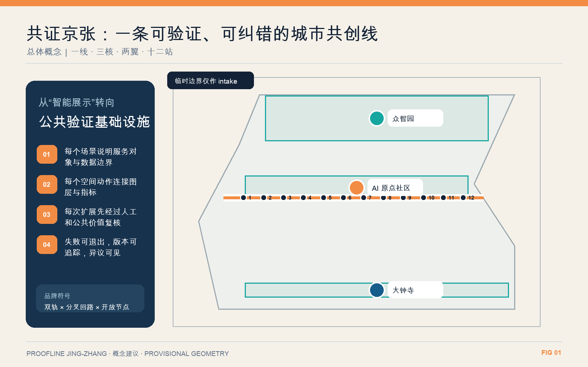
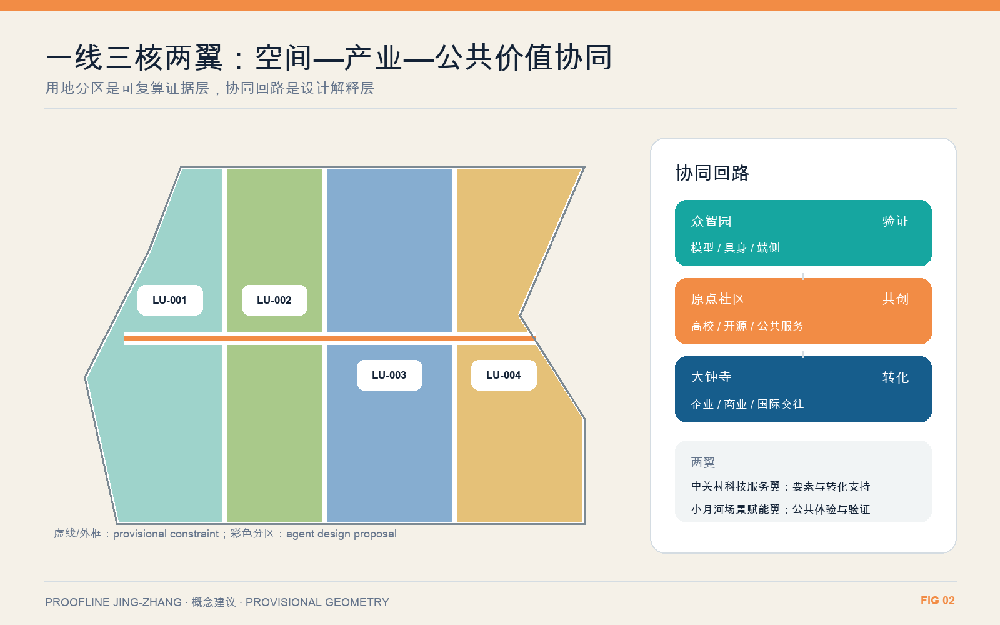
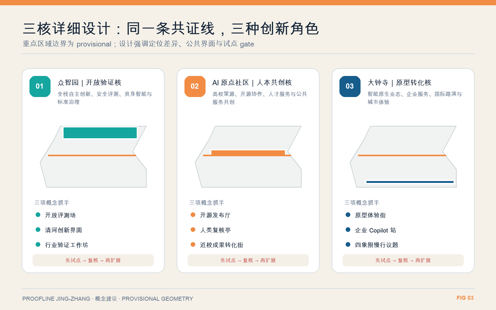
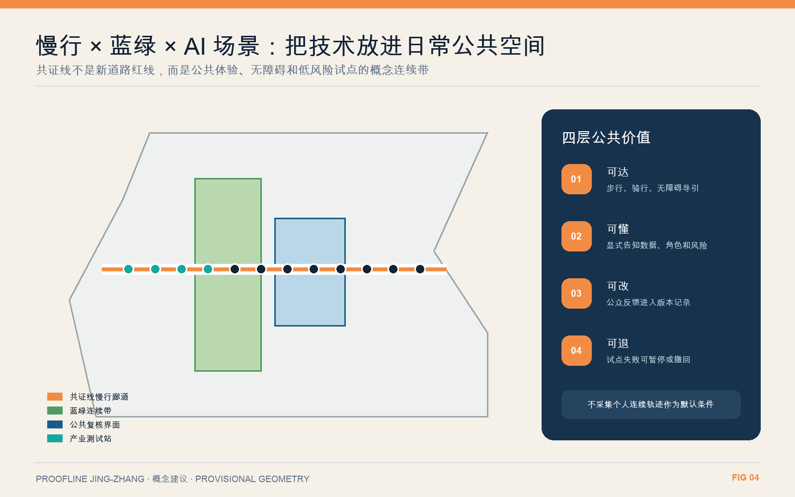
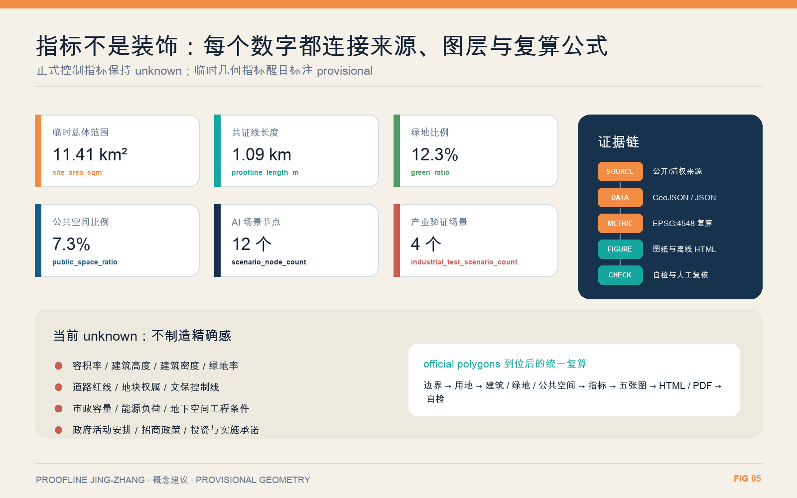

统筹研究范围
43.6 km²：产业生态、区域协同和未来城市形态的研究层。
Proofline Jing-Zhang——把百年铁路转化为一条可体验、可验证、可纠错的 AI 城市共创带。
一线、三核、两翼、十二站。真正的设计对象不是“多装设备”，而是把试验、告知、人工复核、公众反馈和退出机制组织成公共基础设施。

指标来自提交 GeoJSON/JSON；临时几何指标不升级为法定控制。
43.6 km²：产业生态、区域协同和未来城市形态的研究层。
约 11.4 km²：用地、公共空间、慢行、更新项目和治理机制的概念结构层。
368.4 ha：众智园、AI 原点社区和大钟寺的差异化验证层。
四类概念分区完整覆盖提交边界；建筑以保留优先和适应性改造为方法，不作具体地块拆改结论。

模型安全、具身智能、端侧 AI 与标准治理。
高校策源、开源协作、人才服务与公共服务共创。
智能原生业态、企业服务、国际路演与城市体验。

共证线只表达概念连续关系；道路红线、轨道工程、桥隧、市政与防洪条件等待正式资料。

12 张场景卡中有 4 个产业测试验证场景。每个场景默认最小数据、显式告知、人工复核、申诉退出和 pilot-before-scale。
众智园 · 产业测试
众智园 · 产业测试
原点社区 · 产业测试
大钟寺 · 产业测试
小月河翼 · 公共场景
原点社区 · 公共场景
共证线 · 公共场景
原点社区 · 公共场景
科技服务翼 · 公共场景
共证线 · 公共场景
共证线 · 公共场景
共证线 · 公共场景
项目均为概念建议，按近期轻量试点—中期网络形成—远期协同运营推进。
结构化校验、空间复核、视觉包装和专业证据链由仓库脚本复核。PASS 只表示具备进入内容评审的基础，不代表官方批准或方案优秀。

正式任务依据来自仓库登记的公告、清权任务书与专业标准；海外案例仅作背景机制参考。
Background case for work-live-play-learn integration, shared facilities and community activation; not used for project controls.
Background case for lab-to-society and society-to-lab interfaces, proof-of-concept support and knowledge transfer.
Background case for a membership-based knowledge network, public access, place stewardship and recurring events.
Background case for industrial-area transformation, mixed amenities, transit connection and neighborhood-serving public realm.
Background case for program-based admission, cohort operation, startup support and inclusive entrepreneurship pathways.